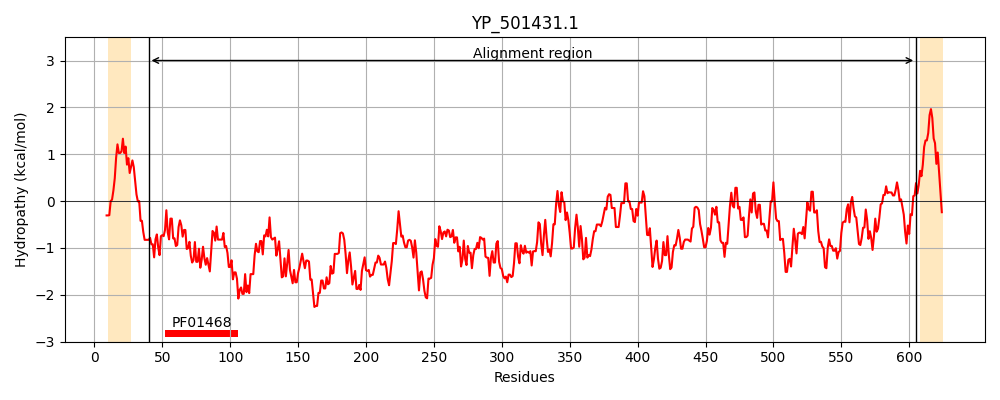
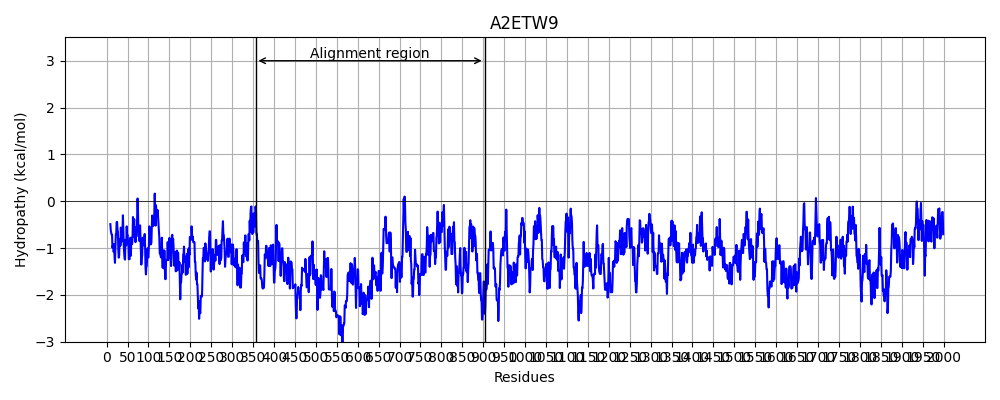
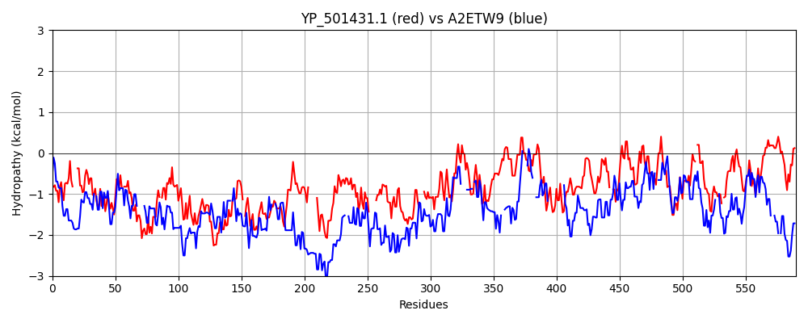

Hit Accession: A2ETW9
Hit TCID: 1.C.105.2.2
Hit Description: gnl|BL_ORD_ID|249 gnl|TC-DB|A2ETW9|1.C.105.2.2 Viral A-type inclusion protein, putative OS=Trichomonas vaginalis GN=TVAG_192230 PE=4 SV=1
Mach Len: 590
e:0.000000
Query TMS Count : 2
Hit TMS Count: 0
TMS-Overlap Score: 0.000000
Predicted Substrates:CHEBI:3473;cation
BLAST Alignment:
Score: 183 , Bit scores: 75 bits, E-value: 6.6e-14, Alignment length: 590, Percentage identity: 20
Query: 40 EKDTEITKEILSKQDLL---DKVDKAIRQIEQLKQLSASSKEHYKAQLNEAKTASQ-IDEIIKRANELDSKDNKSSHTEMNGQSDI-DSKLDQLLKDLNEVSSNVDRGQQSGEDDLNAMKNDMSQTATTKHGEKDDKNDEAMVNKALEDLDH-LNQQIHKSKDASKDTSEDPAVSTTDNNHEVAKTPNNDGSGHVVLNKFLSNE------ENQSHSNRLTDKLQGSDKINHAMIEKLAKSNASTQHYTYHKL-----NTLQSLDQRIANTQLPKNQKSDLMSEVNKTKERIK---SQRNIILEELARTDDKKYATQSILESIFNKDEAVKILKDIRVDGKTDQQIADQITRHIDQLSLTTSDDLLTSLIDQSQDKSLLISQILQTKLGKAEADKLAKDWTNKGLSNRQIVDQLKKHFASTGDTSSDDILKAILNNAKDKKQAI--ETILATRIERQKAKLLADLITKIETDQNKIFNLVKSALNGKADDLLNLQKRLNQTKKDIDYILSPI-VNRPSLLDRLNKNGKTTDLN-KLANLMNQGSDLLDSIPDIPTPKPEKTLTLGKGNGLLSGLLNADGNVSLPKAGETIK 605
EK+ + E L KQ + D +Q+E ++ L + + Q+N+ + ++ I+K L KS + +M ++ + + ++++++ N N+ + ++ +++++++ N+ + +K K+ EA N+ ++ L++ +NQ K KD K E + D N + + + + N+ L+NE E Q + N+ + QG++++N + + K + K+ + +++ Q N +L E+ ++E++K S+ I+ +++ + D+ L+ + NK ++K+ +D D + + + + I+ L D S+ +++D L SQ+ L K E ++ Q+ ++L+K A+ + S + NN + ++ I ++ L +E K +L + + KIE++ ++ AL + D+L N +++ K +++ + I S + +L K + DLN K+ +L + ++L I +I L N L + LN + N L E IK
Sbjct: 356 EKEIDDLSEELEKQQVTKTESNSDDFQKQVEAVR-LVKEENDQLRDQINQLTVYKEKMNSILKENQNL-----KSEYIKMKDENTLLREENERIMEESNAAKENLKKENENQKNEISSLTNEDELYKLREENDKLIKSREAQ-NEIIQKLNNEMNQMKEKEKDFDKLAQEKKLLK--DENDRLINSEMEELDKYKKENQDLNNELQRIKNERQENENKENNLKQGNEQLNEEL--QRTKQTVINKEEELKKVRDEADKLRKKIEELKEKQQNQINDNEELRKEIKSSEEKMKEIQSENEILKKQIEKEDENSSNISDDLQKLVNK----SLVKE-SIDENNDVETIENLKKEIEDLK--KEKDNFDSISIENED---LRSQV--EVLIKVEDER------------NQMSEELEKLRANYNELQSQISKQNFENNKETIEKLIGEKSKLQEELESIKNELDSIQVEKIESENESSSKII--ALTEEIDELKNQINNISEQKSTLEFTIDEIKAQNESEISQLKKENE--DLNSKIESLSKENNELKTEIENIQNSHSLSLLETEMNNKLTN--LNEE-NDMLKNENENIK 903 | Protein Hydropathy Plots: |
|---|
|  |  |
Pairwise Alignment-Hydropathy Plot:
|
|---|
|  |